传统的电池盒有没有看腻了呢？看看牛逼的电池盒是怎么做的吧！！
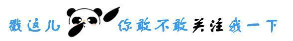
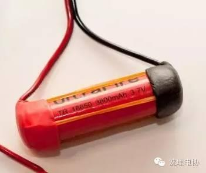
首先呢，找一些18650电池来
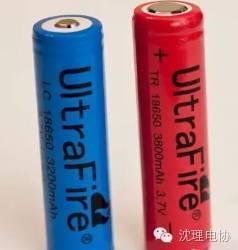
然后是这些小铁环，用来做电池盒的正负极。螺丝上的垫圈都可以拿来代替！放在正极的铁环中孔要大一点！
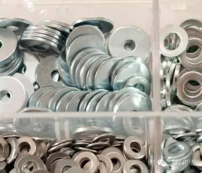
放在负极的铁环，中孔可以小一点
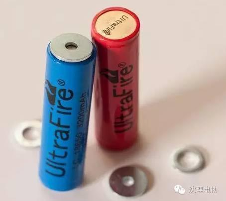
正极的铁环中孔要大一点
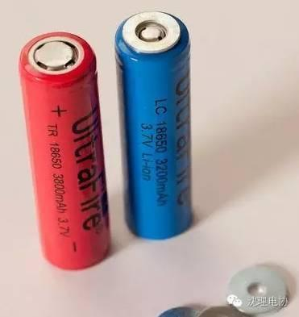
铁环上上一点焊锡，便于焊接
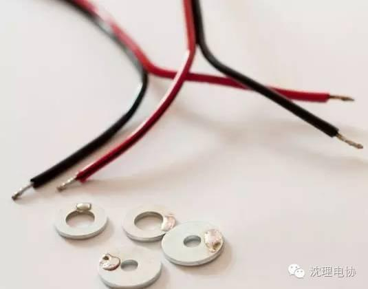
把铁环和电线焊接在一起
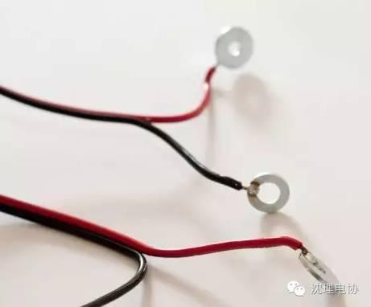
橡皮筋：
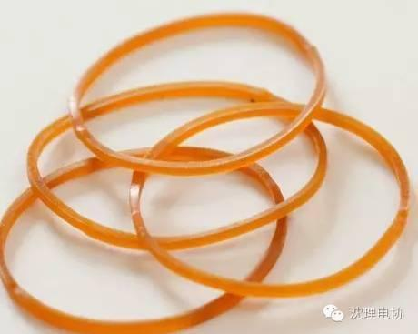
用橡皮筋把铁皮固定住：
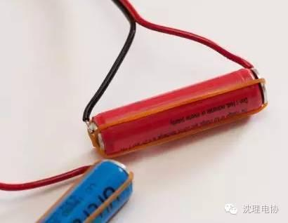
用纸胶布把橡皮筋固定住。这里推荐大家使用比较宽的那种橡皮筋，而不是图上的这种细的。
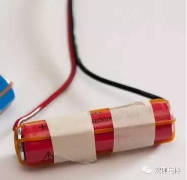
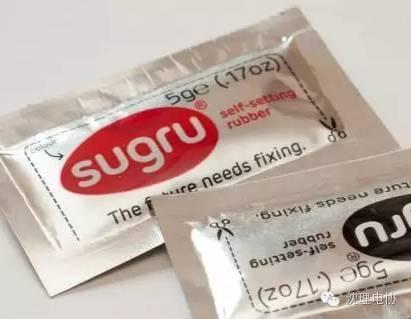
用sugru包裹电池的2端，放置一会后就会硬化
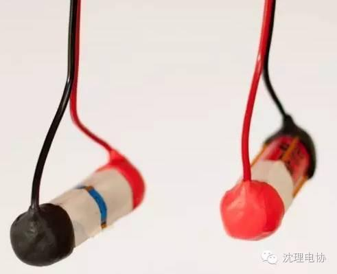
硬了之后取出电池，剩下的就是电池盒了
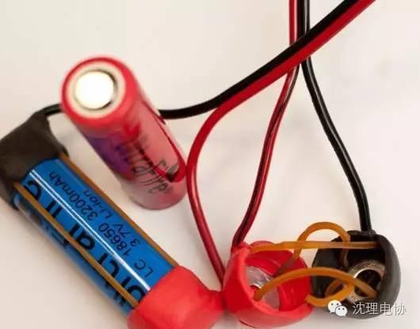
↓↓↓ 点击"阅读原文" 【查看更多信息】
信息部/张晋鹏